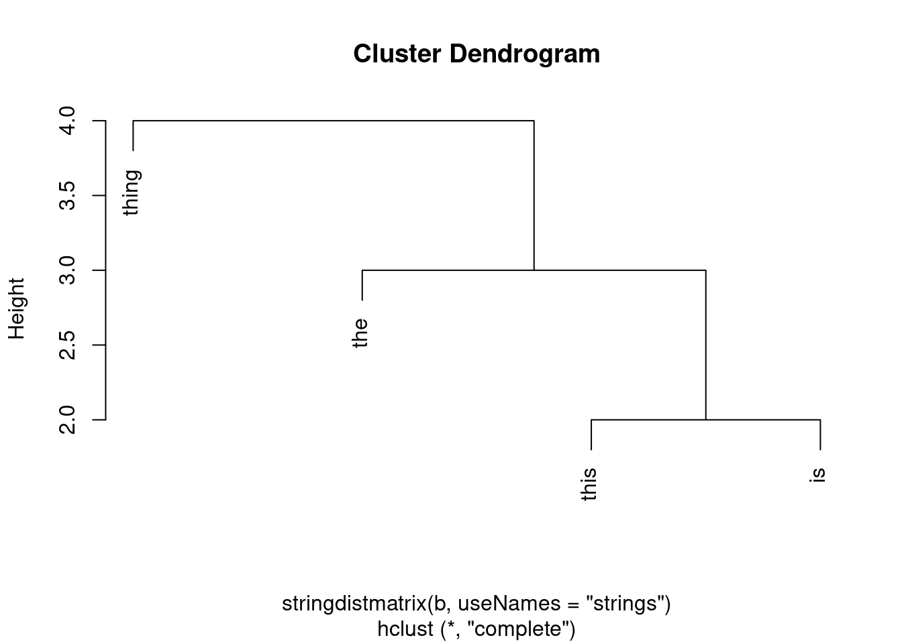
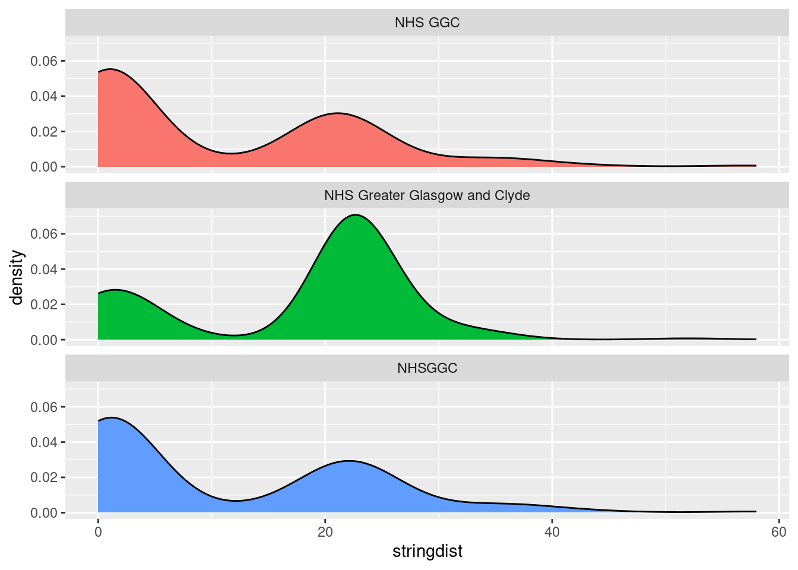
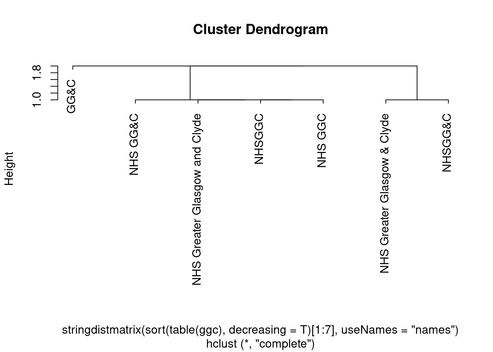

# install.packages("stringdist") # likely needs compiling
library(stringdist)
library(ggplot2) # for something fun laterStringdist
R
intermediate
NLP
Introduction
This is an introduction to stringdist which is designed to allow fuzzy matching of text. Install and attach in the standard way:
While there are several families of functions in the package, we’ll concentrate on those that focus on the core idea: strings differ, and you can quantify those differences for pleasure and profit. A simple example:
stringdist("thing", "think")[1] 1stringdist("thing", "string")[1] 2stringdist("thing", "oxpecker")[1] 8Once you’ve got an idea about how different you’re okay with your strings being, you can use e.g. a max distance as a cut-off to do work in your code. A simple example of implementing this can be found in the amatch function, which is designed to work like a fuzzy matching version of base-R’s match. We’ll use a and b as variable names to keep aligned with the stringdist documentation. Quick refresher on match:
[1] 3Match lets you do useful work with strings - e.g. remove everything before your key word:
exemplar: amatch
And now for the amatch version:
a <- "thee" # take a value
amatch(a, b, maxDist = 1) # maxDist = allowable number of typos[1] 3amatch(a, b, maxDist = 10) # where several possible values exist, amatch returns the closest match[1] 3You can use that in a base-R way to e.g. correct wonky input values:
b[amatch(a, b, maxDist = 1)] [1] "the"Or you might prefer the ain helper:
ain(a, b, maxDist = 1)[1] TRUEa %in% b # like a fuzzy version of %in%[1] FALSE"the" %in% b[1] TRUEOr in a slightly horrid but tidyish way if you wanted to tidy up several different values:
other functions
stringdist, stringsim, and stringdistmatrix
stringdist has a nice toolkit of related functions. stringdist gives you the distance between strings:
stringdist("thing", "think") # gives you the raw distance.[1] 1stringdist(a, b) # vectorised[1] 2 4 1 3stringsim does the opposite, giving a similarity score between 0 and 1:
stringdistmatrix does what you might imagine, returning a matrix of differences. This is largely useful if you want e.g. to pass these scores into something like a clustering algorithm that expects a matrix:
stringdistmatrix(a, b) # same idea, different output: a matrix of differences [,1] [,2] [,3] [,4]
[1,] 2 4 1 3
Call:
hclust(d = stringdistmatrix(b))
Cluster method : complete
Distance : osa
Number of objects: 4 plot(hclust(stringdistmatrix(b, useNames = "strings")))
It’s possible-but-messy to take this matrix and tidy it into a tibble:
stringdistmatrix(c("thee", "che"), b, useNames = "strings") |>
as.data.frame() |>
tibble::as_tibble(rownames = "a") |> # slightly roundabout conversion to tibble via df to preserve rownames
tidyr::pivot_longer(!a, names_to = "b", values_to = "stringdist") # useful # A tibble: 8 × 3
a b stringdist
<chr> <chr> <dbl>
1 thee this 2
2 thee is 4
3 thee the 1
4 thee thing 3
5 che this 3
6 che is 3
7 che the 1
8 che thing 4But probably better/more idiomatic to go:
tidyr::expand_grid(a = c("thee", "che"), b) |>
dplyr::mutate(stringdist = stringdist(a, b))# A tibble: 8 × 3
a b stringdist
<chr> <chr> <dbl>
1 thee this 2
2 thee is 4
3 thee the 1
4 thee thing 3
5 che this 3
6 che is 3
7 che the 1
8 che thing 4
afind, grab, grabl, and extract
afind(a, b)$location
[,1] [,2] [,3] [,4]
[1,] 1 1 1 1
$distance
[,1] [,2] [,3] [,4]
[1,] 2 2 0 3
$match
[,1] [,2] [,3] [,4]
[1,] "thee" "th" "the" "thee"afind returns a lot of stuff:
afind(a, b)$location # where in substrings do the search terms start? [,1] [,2] [,3] [,4]
[1,] 1 1 1 1afind(a, b)$distance # how far from the search term is each substring? [,1] [,2] [,3] [,4]
[1,] 2 2 0 3afind(a, b)$match # what's the best matching part of the search term against each substring [,1] [,2] [,3] [,4]
[1,] "thee" "th" "the" "thee"If that’s a bit confusing, grab and grabl are basically replacements for grep(l). grab == grep and grabl == grepl:
What do you mean closest?
The really interesting bit: you can play with the method used to calculate distance which will give different results:
hamming
Hamming distance. Number of character substitutions required to change a into b.
lv
Levenshtein distance. Number of del/ins/subs required to change a into b.
osa
Optimal string aligment. Number of del/ins/subs/swaps required to change a into b:
dl
Full Damerau-Levenshtein distance. As osa, but calculated slightly differently.
amatch("thign", b, maxDist = 1, method = "dl") # can't find a difference with these simple ones from osa[1] 4lcs
Longest common substring distance. Comparing longest identical parts of a and b:
amatch("thign", b, maxDist = 2, method = "lcs") # I think roughly = length - common substring[1] 4soundex
Distance based on soundex encoding. Used in the phonetic function (see below), but finds homophones:
amatch("thign", b, maxDist = 1, method = "soundex")[1] 1stringdist("too", c("two", "to", "oto"), method = "soundex")[1] 0 0 1There are also several methods designed to look at q-grams = substring chunks of q characters long, and a group of methods based on the number of similar and different q-grams between a and b:
qgram
This is the q-gram distance:
stringdist("thign", b, method = "qgram")[1] 3 5 4 0cosine
The cosine distance between q-gram profiles, which gives you (usefully) a scaled distance of between 0 (identical) and 1 (utterly different)
stringdist("thing", b, method = "cosine")[1] 0.3291796 0.6837722 0.4836022 0.0000000stringdist("thing", "fox", method = "cosine")[1] 1jaccard
The Jaccard distance between q-gram profiles
stringdist("thing", b, method = "cosine") [1] 0.3291796 0.6837722 0.4836022 0.0000000stringdist("thing", b, method = "jaccard") [1] 0.5000000 0.8333333 0.6666667 0.0000000jw
The Jaro distance (and Jaro-Winkler distance):
stringdist("thing", b, method = "jw", p = 0.2) # correction term[1] 0.08666667 1.00000000 0.18666667 0.00000000phonetic
There’s also tooling to deal with the similarity of phonetic spellings. Excellent for e.g. Teams transcripts, if you’re trying to tidy those up:
a play example: GGC
The KIND network has lots of members from the main NHS body in Glasgow, which is officially known as “NHS Greater Glasgow and Clyde”. That’s a highly variable and abbreviatable name though, leading to over 70 different permutations in common use. Here are some real-ish examples
ggc <- readr::read_lines(here::here("r_training/data/ggc.txt")) # real data
sample(ggc, 10) [1] "NHSGGC" "NHSGGC"
[3] "NHS GG&C (QEUH)" "NHS Greater Glasgow and Clyde"
[5] "NHS Greater Glasgow and Clyde" "NHS GGC"
[7] "Nhs GGC" "NHS Greater Glasgow & Clyde"
[9] "NHS GGC" "NHSGGC" There’s lots here to play with using stringdist. My two quick examples are to plot a couple of different sensible variants of the name (“NHS GGC”, “NHS Greater Glasgow and Clyde”, “NHSGGC”) methods, and see how many distant results we get:
tidyr::expand_grid(a = c("NHS GGC", "NHS Greater Glasgow and Clyde", "NHSGGC"), b = ggc) |>
dplyr::mutate(stringdist = stringdist(a, b)) |>
ggplot() +
geom_density(aes(x = stringdist, fill = a)) +
facet_wrap(~a, ncol = 1) +
theme(legend.position = "none")
Or to try a family tree (more swishily, a cluster dendrogram) of those terms:
sort(table(ggc), decreasing = T)[1:7] |>
stringdistmatrix(useNames = "names") |>
hclust() |>
plot()